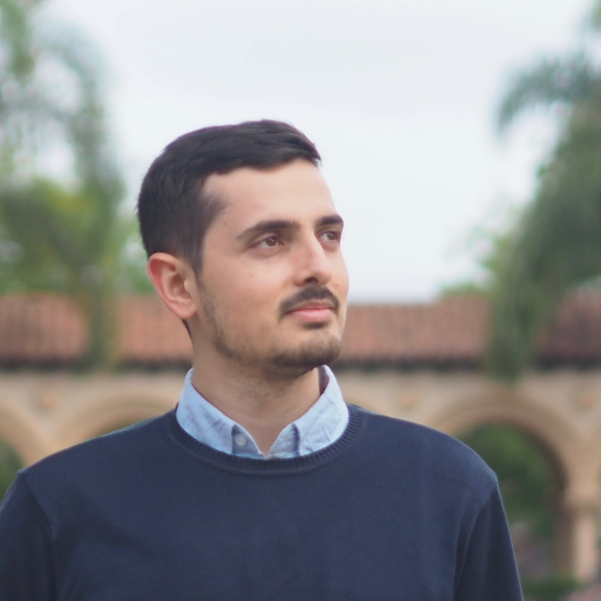

<div class="container">
  <div class="row">
    <div class="col-md-4" style='margin-top:20px'>
      <div class="imgAbt">
        
      </div>
    </div>
    <div class="col-md-8" style='margin-top:20px'>
      <p>
      I am a data scientist and researcher. I am currently a <a
        href="http://bioinformatics.ucsd.edu" target="_blank">Bioinformatics
        and Systems Biology</a> program at the <a
        href="http://www.ucsd.edu/" target="_blank">University of
        California, San Diego</a>.
      </p>

      <p>I recently obtained my M.S. in  <a href="https://ic.epfl.ch/en"
        target="_blank">Computer Science</a> at <a href="http://www.epfl.ch/"
        target="_blank">Swiss Federal University of Technology in Lausanne</a>,
      where I worked on computational biology and bioinformatics in <a
        href="http://lcbb.epfl.ch" target="_blank">LCBB</a>. I completed my
       M.S. thesis is
      titled <a href="/thesis/masterthesis.pdf">Real-time Traffic Estimation on
      Highways Using Cellular Data</a> at <a href="https://www.swisscom.ch/en/about.html"
      target="_blank">Swisscom</a>, the major telecommunications provider in Switzerland.
      </p>
<!--  <p>
      I studied <a href="http://www.automation.sjtu.edu.cn/en/" target="_blank">automation</a> in my undergraduate at <a href="http://en.sjtu.edu.cn/" target="_blank">Shanghai Jiao Tong University</a>. I was intersted in <a href="http://en.wikipedia.org/wiki/Control_theory" target="_blank">control theory</a> and its applications in electronic and electrical systems. At <a href="http://www.washington.edu/" target="_blank">University of Washington</a>, I was fascinated by the emerging area of <a href="http://www.synberc.org/what-is-synbio" target="_blank">synthetic biology</a> where I could apply my knowledge in <a href="http://en.wikipedia.org/wiki/Automation" target="_blank">automation</a> to engineer biological systems that lead to disruptive innovations in biotechnology. In <a href="http://klavinslab.org/" target="_blank">Klavins Lab</a>, I worked on several <a href="/research">research projects</a> in synthetic biology with the aim of designing, building, and testing synthetic dynamic gene circuits. I worked greatly on building high quality, reproducible build and test workflows in the <a href="http://klavinslab.org/aquarium.html" target="_blank">Aquarium lab oprating system</a>, which we invented in the Klavins Lab. I also worked as an engineer building commercial solutions at Aquarium LLC, a startup based on <a href="http://klavinslab.org/aquarium.html" target="_blank">Aquarium</a>.</p>
 -->
      <p>Outside work, I enjoy reading and various outdoor activities. Aside
      from my main research questions, I am trying to answer the question "What
      is the environmentally responsible and morally integrious way of eating that
      is scientifically as healthy and balanced as possible?" --- which can be
      partially but definitely not fully answered in the domain of science.
      </p>`
    </div>
  </div>
</div>
